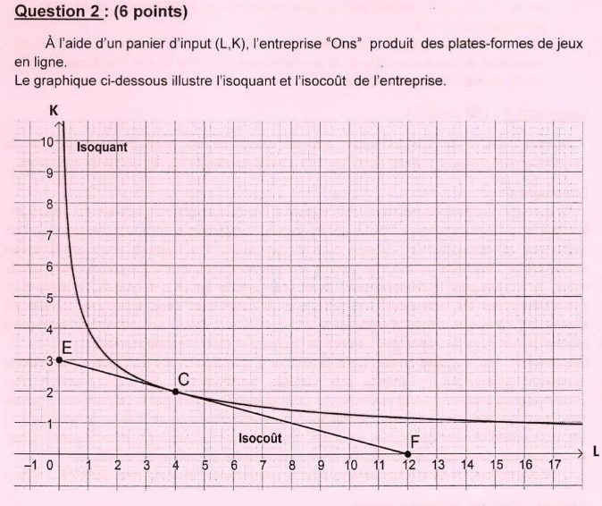

Économie
Bac 2023 – Session Principale
Épreuve officielle simulée — Section Économie & Gestion
Clique sur chaque verbe pour comprendre ce qu'attend le correcteur.
📌 Recommandations officielles – Épreuve d'Économie
- ✅ Lire attentivement chaque question.
- ✅ Commencer par la question la plus facile.
- ✅ Pour la dissertation : dégager la problématique.
- ✅ Rédiger introduction, développement (2 parties), conclusion.
- ✅ Utiliser les documents fournis.
- ✅ Présenter les calculs sur la copie.
- ✅ Soigner la présentation et l'écriture.
- ✅ Vérifier les unités (DT, UM, pourcentage, etc.).
Ce que tu dois savoir
Notions ciblées pour cette épreuve uniquement
La contrainte budgétaire limite les choix du consommateur : R = x.Px + y.Py où R est le revenu, Px et Py les prix des biens X et Y.
• R = x.Px + y.Py
• Si R augmente → droite de budget se déplace vers la droite
• Si prix baisse → pivot de la droite
Amel : R=20 DT, Px=0,500 DT, Py=1,200 DT. 16 yaourts + 10 laits = 8+12 = 20 DT.
• R = xPx + yPy
• Toute combinaison au-dessus de la droite est inatteignable
Une courbe d'indifférence représente tous les paniers procurant la même utilité. Pour U donnée, on isole y en fonction de x.
• U(x,y) = constante → isoler y = f(x)
• TMS = Umx / Umy
• À l'équilibre : TMS = Px/Py
U = 2 x^(1/4) y^(3/4) = 2 → x^(1/4) y^(3/4) = 1 → x y^3 = 1 → y = 1/x^(1/3).
• U constante sur une courbe d'indifférence
• Plus on s'éloigne de l'origine, plus U est élevée
L'inflation est une hausse généralisée des prix. La déflation est une baisse (taux négatif). La désinflation est un ralentissement de l'inflation (taux positif mais en baisse).
• Inflation : taux > 0 et en hausse
• Désinflation : taux > 0 mais en baisse
• Déflation : taux < 0
Maroc : 1998 = 2,80 %, 1999 = 0,70 % → taux positif mais en baisse = désinflation.
Syrie : 1998 = −0,80 %, 1999 = −3,70 % → taux négatif = déflation.
• Taux > 0 = inflation
• Taux < 0 = déflation
• Taux > 0 mais en baisse = désinflation
L'isocoût = combinaisons de facteurs pour un même coût total. L'isoquant = même production. Le TMST = taux de substitution technique.
• CT = wL + rK → r = CT/K quand L=0
• TMST = PmL/PmK
• À l'équilibre : TMST = w/r
E(0,3) → 60 = 3r → r = 20. F(12,0) → 60 = 12w → w = 5.
TMST = K/2L = 5/20 = 1/4 → K = 0,5L. L*=4, K*=2, Q*=4.
• Isocoût : CT constant
• Isoquant : Q constante
• TMST = w/r à l'équilibre
Les rendements d'échelle mesurent comment la production varie quand on multiplie tous les inputs par un même facteur λ.
• Q(λL, λK) = λ Q → rendements constants
• Q(λL, λK) > λ Q → rendements croissants
• Q(λL, λK) < λ Q → rendements décroissants
• Si α+β=1 → rendements constants (Cobb-Douglas)
Q(L,K) = 2^(2/3) L^(1/3) K^(2/3). α+β = 1/3+2/3 = 1.
Q(2L,2K) = 2 × Q → rendements constants. CT' = 2 × CT = 120 UM.
• α+β = 1 → constants
• α+β > 1 → croissants
• α+β < 1 → décroissants
Le développement durable vise à satisfaire les besoins présents sans compromettre ceux des générations futures. Il repose sur 3 piliers : économique, social, environnemental. La RSE est l'intégration volontaire par les entreprises de préoccupations sociales et environnementales.
• Économique : création de richesses, emplois
• Social : bien-être, équité, non-discrimination
• Environnemental : protection des ressources, recyclage
Consommateur citoyen : boycott produits dangereux, choix produits bios et locaux.
Producteur citoyen (RSE) : recyclage, énergies propres, diversité, bien-être au travail.
• DD = 3 piliers (éco + social + env)
• RSE = engagement volontaire des entreprises
• Comportement citoyen = consommer et produire responsable
Ministère de l'Éducation
EXAMEN DU BACCALAURÉAT
[ ][ ][ ][ ][ ][ ][ ][ ]
Item 1 : Amel détient un budget de 20 DT. Le prix d'un pot de yaourt est de 0,500 DT et le prix d'un paquet de lait est de 1,200 DT. En dépensant la totalité de son revenu, Amel peut acheter :
Justification : R = x.Px + y.Py. (16 × 0,500) + (10 × 1,200) = 8 + 12 = 20 DT. Les autres propositions ne donnent pas exactement 20 DT.
16 yaourts + 10 laits = (16×________) + (10×________) = 8 + 12 = 20 DT.
Item 2 : Amira consacre la totalité de son budget à l'achat de tablettes de chocolat et de paquets de biscuit. Budget = 45 DT, 5 chocolats (5 DT l'unité), biscuits (1 DT le paquet). Budget augmente de 15 DT, prix constants, chocolat augmente, biscuit constant. Nouveau panier :
Justification : Biscuits = (45 − 5×5)/1 = 20 paquets. R' = 45+15 = 60 DT. Chocolats = (60 − 20×1)/5 = 40/5 = 8 tablettes. Panier : (20 biscuits, 8 chocolats).
Biscuits = (45 − ________)/1 = 20. R' = 60. Chocolats = (60 − ________)/5 = 8.
Item 3 : Évolution du taux d'inflation : Zambie (24,46%→26,79%), Syrie (−0,80%→−3,70%), Espagne (1,83%→2,31%), Maroc (2,80%→0,70%). Le pays qui a connu une désinflation en 1999 est :
Justification : Maroc : taux 1998 = 2,80 %, 1999 = 0,70 %. Le taux diminue mais reste positif → désinflation. Syrie = déflation (taux négatif). Zambie et Espagne = inflation (taux en hausse).
La désinflation se caractérise par un taux d'inflation ________. Le pays concerné est le ________.
Item 4 : Pour une fonction d'utilité U(x,y) = 2 x^(1/4) y^(3/4) et un niveau d'utilité = 2, l'équation de la courbe d'indifférence est :
Justification : U = 2 x^(1/4) y^(3/4) = 2 → x^(1/4) y^(3/4) = 1 → x y^3 = 1 → y = 1/x^(1/3).
x^(1/4) y^(3/4) = 1 → x y^________ = 1 → y = 1/x^(________).
Item 2 : Réponse b. Biscuits=(45−25)/1=20. R'=60. Chocolats=(60−20)/5=8.
Item 3 : Réponse d. Maroc : taux passe de 2,80% à 0,70% → désinflation.
Item 4 : Réponse a. x^(1/4) y^(3/4)=1 → x y^3=1 → y=1/x^(1/3).

1- En exploitant le graphique :
Au point E(0,3) : CT = rK → r = CT/K = 60/3 = ________ UM.
Au point F(12,0) : CT = wL → w = CT/L = 60/12 = ________ UM.
Le point C correspond à l'________ : combinaison optimale (L*,K*) qui maximise la production sous contrainte de coût.
2- Exprimez le TMST puis déterminez l'équilibre :
Q = 2^(2/3) L^(1/3) K^(2/3). TMST = PmL/PmK = ________.
À l'équilibre : TMST = w/r = 5/20 = 1/4 → K = ________.
5L + 20K = 60 → L* = ________, K* = ________, Q* = ________ plates-formes.
2- TMST = PmL/PmK = K/2L. À l'équilibre : K/2L = 5/20 = 1/4 → K = 0,5L. 5L+20(0,5L)=15L=60 → L*=4, K*=2, Q* = 2^(2/3)×4^(1/3)×2^(2/3) = 4.
3- Vérifiez que la phrase soulignée dans le texte est vraie pour l'entreprise "Ons". Quel sera alors le nouveau coût total de production ?
Doublement du panier : L' = 2L, K' = 2K.
Q' = 2^(2/3) (2L)^(1/3) (2K)^(2/3) = 2^(2/3) × 2^(1/3) × L^(1/3) × 2^(2/3) × K^(2/3) = ________ × Q.
Donc Q' = ________ → la production double → rendements d'échelle ________.
Nouveau coût : CT' = (5×8) + (20×4) = ________ UM = 2 × CT.
Le concept de développement durable repose sur la conciliation des intérêts économiques, sociaux et environnementaux. C'est en prenant en compte ces trois dimensions que l'on appréciera le comportement citoyen du consommateur. On observe une sensibilisation croissante de chacun au respect de valeurs éthiques permettant de consommer des produits sains, de sauvegarder l'environnement, de ne pas exploiter les plus démunis. Le respect de ces valeurs par les entreprises ne peut que favoriser leur développement durable en s'inscrivant dans une nouvelle logique de production. [...] Or, la prospérité de l'entreprise repose parfois sur l'ignorance des intérêts de l'homme et de son environnement. [...]
Les fermiers, qui s'étaient lancés dans la culture à grande échelle de plantes manipulées retournent aujourd'hui en masse aux variétés traditionnelles. [...] La pression d'un consommateur citoyen a porté ses fruits. [...] Par la manifestation, par le boycott des produits dangereux, le consommateur est un danger pour l'entreprise non soucieuse à l'éthique. [...]
Les entreprises doivent désormais s'inscrire dans le cadre du développement durable, c'est-à-dire assumer une triple responsabilité environnementale, sociale et économique.
Source : Béatrice CANEL DEPITRE, Le Havre
Document 2 :
La commission européenne définit le concept de RSE comme l'intégration volontaire par les entreprises de préoccupations sociales et environnementales à leurs activités commerciales et leurs relations avec leurs parties prenantes. [...]
- Environnement et DD : actions en faveur des économies d'énergie, gestion des déchets, chaînes de production propres.
- Diversité : lutter contre la discrimination (sexe, âge, handicap, race).
- Économie locale : favoriser l'emploi local, se fournir auprès d'entreprises locales.
- Bien-être au travail : respect, bienveillance, réduction du stress, harcèlement.
Source : Sévérine Dégaliaix, CADREMPLOI, Mai 2019
Amorce + définition :
Le ________ constitue la préoccupation majeure de tous les pays ; il vise la satisfaction des besoins ________ des générations présentes sans compromettre la capacité des générations futures.
Problématique :
Comment le comportement citoyen des ________ est-il favorable au DD ?
Plan :
Nous montrerons que le comportement citoyen du ________ favorise le DD, puis celui du ________.
Le consommateur citoyen cherche une consommation à impacts ________ : boycott des produits ________, choix de produits nationaux, respect des normes éthiques.
Il préfère des produits ________ : produits bios, saisonniers, préservant les ressources naturelles.
Exploitation doc 1 : La pression d'un ________ a porté ses fruits (retour aux variétés traditionnelles).
L'entreprise citoyenne prend en compte l'impact ________ de ses activités : création d'________, amélioration des conditions de travail, respect des droits de l'Homme, refus du travail des enfants.
Le choix ________ du producteur : ________ des déchets, réduction des gaz à effet de serre, utilisation de ressources ________.
Exploitation doc 2 : La RSE intègre des actions en faveur de l'environnement, de la diversité, de l'économie locale et du ________.
Synthèse : Il est clair qu'en se comportant en ________ et responsables, les acteurs économiques garantissent le ________.
Ouverture : Quels sont les impacts de l'ignorance d'un tel comportement sur l'________ ?
Partie I — Le comportement citoyen du consommateur (3,5 pts) : Impacts sociaux : boycott produits dangereux, choix de produits nationaux/circuits courts → création d'emplois, satisfaction des besoins fondamentaux. Impacts environnementaux : choix de produits bios, saisonniers, réduction des déchets, préservation des ressources. Doc 1 : pression du consommateur citoyen a porté ses fruits.
Partie II — Le comportement citoyen du producteur (3,5 pts) : Impact social : création d'emplois, amélioration conditions de travail, diversité, non-discrimination. Impact environnemental : recyclage, réduction GES, énergies renouvelables. Doc 2 : RSE = environnement, diversité, économie locale, bien-être au travail.
Conclusion (1,5 pt) : Synthèse : en se comportant en citoyens responsables, les acteurs garantissent le DD. Ouverture : impacts de l'ignorance d'un tel comportement sur l'équité intra et intergénérationnelle ?
• Développement (7 pts) : Partie I (3,5 pts) — Partie II (3,5 pts)
• Structuration du développement (1 pt)
• Conclusion (1 pt) : Synthèse (0,5) — Ouverture (0,5)
• Présentation (0,5 pt)
Item 1 : Amel, budget 20 DT, yaourt 0,500 DT, lait 1,200 DT. Peut acheter :
Item 2 : Amira, chocolat/biscuit, budget 45→60...
Item 3 : Inflation : Zambie, Syrie, Espagne, Maroc. Désinflation en 1999 :
Item 4 : U(x,y)=2 x^(1/4) y^(3/4) = 2. Courbe d'indifférence :